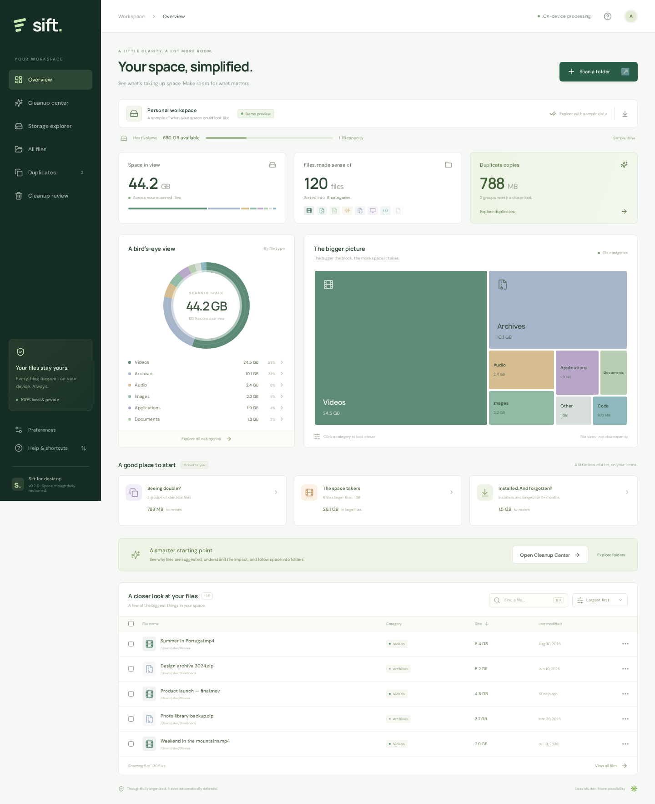

YOUR PLATFORM
Windows
Windows 10 / 11 · x64
Download installer Or get the portable ZIPRequires WebView2. The installer can set it up for you.
Meet a calmer way to understand your storage.
Find what’s taking up space. Make room for what matters.
Free & open source · Windows, macOS & Linux

Your files stay on your device. Your decisions stay yours.Sample workspace shown
Local by design
Always review before removal
Built for your desktop
LESS GUESSWORK. MORE CLARITY.
From the big picture to the forgotten download,
every file has a place. Now you can see it.
A visual map turns a long list of files into something that makes sense. Explore by category, follow a folder, or put your biggest files first.
ACTUAL APP · SAMPLE DATAIllustrative example · You choose the copy to keep
THOUGHTFULLY BUILT. CAREFULLY CLEARED.
Your files are more than bytes. Sift gives you the context to decide what goes, and the control to keep what matters.
A FRESH START, IN THREE STEPS.
No account. No file uploads.
Just you, your files, and a little clarity.
Choose a folder or accessible drive. Sift scans in the background while your files stay on your computer.
Explore categories, spot large files, and compare exact duplicates. Understand the why behind each cleanup suggestion.
Review your selection and choose a cleanup action. Trash supports system restore; permanent actions require typed confirmation.
A LITTLE LESS CLUTTER STARTS HERE.
Your next fresh start is a download away.
Free, open source, for your desktop and Android phone.
Windows 10 / 11 · x64
Download installer Or get the portable ZIPRequires WebView2. The installer can set it up for you.
Apple Silicon & Intel
Download for Mac Get the Intel Mac versionx64 · AppImage or Debian package
Download AppImage Or get the .deb packageMake the AppImage executable before opening. May require FUSE 2.
Android 11+ · native phone app
Download APK APK checksumSigned sideloaded APK. Shared-storage access, Sift trash & reviewed deletion. Android release notes
Desktop previews are unsigned; macOS builds are not notarized. The Android APK is signed.
See installation help before your first launch.
Yes. Sift is free and open source under the MIT license. There’s no account, subscription, or paid upgrade. You can inspect the code and help shape it on GitHub.
No. Both desktop and Android apps scan and compare files locally. The Android app has no internet permission. It doesn’t send your files or inventory to a server. Exporting a JSON inventory is optional, and that report contains file names and paths, so share it thoughtfully.
Select one file, several files, or all matches in a filtered view, then review their full paths. On desktop, Recycle Bin / trash is the default and never falls back to deletion. Android uses its own restorable Sift trash, which still occupies storage; uninstalling Sift removes that trash. On desktop, you can explicitly choose permanent deletion or overwrite-and-delete by typing the action and file count. Overwrite verifies a logical zero pass; SSD/flash, snapshots, backups, and synced copies can retain data. Restore recycled files through your operating system’s trash; Sift cannot undo permanent actions.
This preview is unsigned, and macOS builds are not notarized. Download only from this site’s linked GitHub release and compare its SHA-256 checksum if needed. Windows may show SmartScreen; macOS may require approval in System Settings → Privacy & Security. Only proceed if you trust the source. See the platform prerequisites if a runtime is missing.
Download the signed APK on an Android 11 or newer phone. Allow installation from your browser or file manager when Android asks, then open Sift. Enable Sift’s All files access in system settings, return to the app, and scan shared storage. This is a sideloaded preview, not a Google Play listing. Private app data stays protected. Sift trash can restore moved files; empty selected trash items to reclaim storage. Uninstalling Sift deletes its trash. Android secure wiping is not offered.
Open the Apple menu → About This Mac. If you see an Apple M-series chip (M1 or newer), choose Apple Silicon. If you see an Intel processor, choose Intel. Both downloads are DMG files.
Storage scanning and cleanup happen in the installed desktop or Android app. This website introduces Sift and provides downloads. The desktop app initially shows a labeled sample workspace; choose Scan a folder to explore your own files.
Sift is an early release. Scans follow your current user permissions, skip symlinks, and stop at 500,000 files. Categories use file extensions; suggestions aren’t proof that a file is safe to remove. Read the current scope and limits for more detail. The Android client scans up to 100,000 shared-storage files after you grant access. Protected app data, RAM boosting, and automatic OS or browser-cache cleaning are outside its scope.